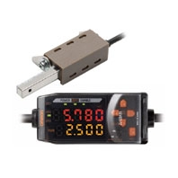
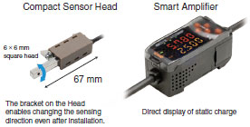
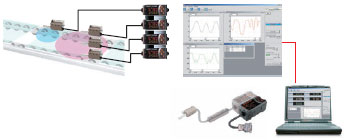
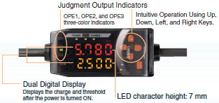
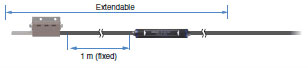
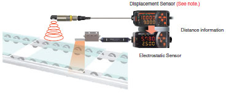
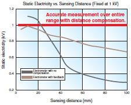
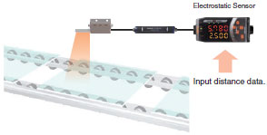
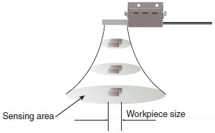

Hand-held devices and large measuring devices are not suitable for easily measuring static charges of workpieces in-line.
The Sensor Head of the Smart Electrostatic Sensor is small (6 × 6 × 67 mm) and the bracket has a rotating mechanism, making it possible to mount it even where space is limited.
Building Automation
Industrial Automation
Power Automation & Safety


Bangladesh Distributor
ZJ-SD
Smart Electrostatic Sensor

Smart Static Electricity Sensing: Making Static Electricity Visible
about this Product Family
Related Contents
- Power Supplies / In Addition
- Static Electricity Components
- Features
- Lineup
- Specifications
- Dimensions
- Application
- Catalog
last update: May 23, 2013
Smart In-line Measurement of Production Site Static Electricity
Compact Sensor Head and Smart Amplifier

Smart Static Electricity Monitoring

For effective discharge, measurements must be made at more than one location and changes over time need to be monitored. With the ZJ-SD, multi-point measurements from up to 5 Units can be made easily if a Calculating Unit is connected between Amplifiers. And the Electrostatic Sensor measurement data can be displayed and logged on a personal computer via an Interface Unit and used for static electricity countermeasures.
Our Highest Priority: Easy Onsite Operation
Simple Settings Using Key Operations

A seven-segment, two-row display is provided for workpiece charge and threshold displays.
Settings are easy to make using Up, Down, Left, and Right Keys.
Remote Detection

Use the ZX-XC[]A (order separately) to extend the cable to 2, 5, or 9 m.
Best Long-distance, High-precision Measurements in the Industry
The ZJ-SD provides the highest detection accuracy in the industry when combined with a ZX Displacement Sensor. And even more precise measurements are possible with the compensation function that adjusts to the size of the workpiece.
[Workpiece Distance Compensation]
Long-distance, High-precision Measurements

The best sensing range in the industry at 100 mm/ ±50 kV.
Sensors that measure static charges are greatly affected by the measurement distance. The ZJ-SD solves this problem by combining with a ZX-series Displacement Sensor to enable communicating distance information and thus achieve high-accuracy measurements.
Note: Ultrasonic Displacement Sensors are also available. Contact your OMRON representative for details.

Unaffected by Measurement Distance

In addition to distance data compensation performed by the Displacement Sensor, errors from distance fluctuations can also be reduced by directly inputting the installation distance into the Amplifier.
[Workpiece Size Compensation]
Accurate Static Charge Measurements for Small Workpieces

The Electrostatic Sensor's sensing area is approximately five times the installation distance.
Enter the workpiece size to measure the static charge of workpieces smaller than the sensing area. (See note.)
The ZJ-SD can compensate the static charge based on a comparison of the installation distance recorded in the Preamplifier and the size of the sensing area.
Note: Except for the workpiece, static charge inside the sensing area must be 0 V. Use a measurement error of approximately 10% as a guide for a measurement distance of 5 mm and a workpiece of 10 mm in diameter.
last update: May 23, 2013